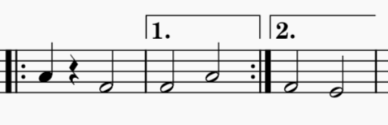
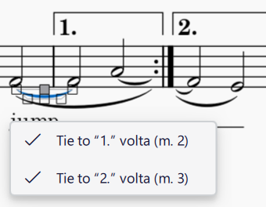

Items across repeats and jumps
Sometimes, items which can span multiple notes can start before a repeat or jump but need end at the other side of that repeat or jump. This can mean that the end actually comes before the start in the score (for example, when going back to the start of a repeat, or at a D.C. or D.S.), or may come after the start but have other material in between, like when jumping across a first-time bar or to a coda.
MuseScore Studio supports this behaviour for certain types of item, specifically ties, slurs and lyrics lines. The way that each type of item is created is slightly different.
The following instructions will refer to this short example as a model:

Before

After
Ties
To add a tie that crosses a repeat or jump:
- Select the starting note of the tie
- Press
Tor click the tie icon in the toolbar.
The tie will be drawn to all valid locations where there is a note of the same pitch to connect to. It is entirely possible for there to be more than one endpoint for a tie, so several segments may appear.
In the example, adding a tie to the A in the first-time measure will create a partial tie from the note to the end repeat barline, and a partial tie from the start repeat barline to the A in the first measure.
Adding a tie to the F in the first measure will create a 'normal' tie to the next note, but will also create a partial tie to the F in the second-time measure. This is an example of a tie that has multiple endpoints. If you select such a tie, you will see a popup which lists the places the tie connects to:

You can select or deselect items in this list and the tie segments will appear or disappear accordingly. You can also select the partial tie segment at any endpoint and delete it.
Slurs
Slurs can span any range of notes, rather than only connecting adjacent notes, so MuseScore cannot create these 'automatically' for you. Therefore, you must add the individual segments manually.
To add a slur segment:
- Select the two endpoints of the slur by clicking one and then
Ctrl+clicking (macOS:Cmd+click) the other. One endpoint must be a note and the other endpoint must be a repeat barline or a barline which has a jump on it (D.C., D.S., etc.) - Press
Sor click the slur icon in the toolbar.
If you have a slur which starts on the first note after a jump, or which ends on the last note before a jump, and you want to move the endpoint next to the jump into the 'hanging' position, you can do this by selecting that endpoint and pressing Shift+Alt+Left/Right (macOS: Shift+Option+Left/Right).
Lyric lines
Lyric extension lines and dashes can also be added across jumps; like slurs, the individual parts need to be input manually.
For general information on inputting lyrics, see Lyrics.
To add a partial lyric line after a repeat or jump:
- Select the first note after the repeat or jump
- Type
Ctrl+L(macOS:Cmd+L) to enter lyric entry mode - Type
_for an extension line or-for a dashed line (without any other characters before); the line will be drawn starting just after the barline. Repeat the keypress to extend the line across more notes if necessary.
To delete a partial lyric line of this type, simply select it and press Del. Only partial lines like this (with no preceding syllable) can be selected in this way. Normal lyric lines are dependents of the syllable that precedes them, and cannot be selected directly.
Lyric lines going into a repeat or jump are added in the 'normal' way during lyric entry: once you get to the last note before a jump, which may either have a syllable on it or have a continuation of a lyric line that started before, simply type _ or - and the line will be drawn up until the repeat or jump.
A partial lyric line of this type can be selected in order to delete it (press Del). This is in contrast to normal lyric lines, which are dependents of the syllable that precedes them.
In the example at the top of the page, the lyrics are entered in the following way (these can be done in any order):
- Select the first A, enter lyric entry mode and type
_once; this creates a partial lyric line starting from the repeat barline - Select the first F, enter lyric entry mode and type
jumpthen_three times; the third press extends the lyric line to the repeat barline - Select the second F, enter lyric entry mode and type
_twice.